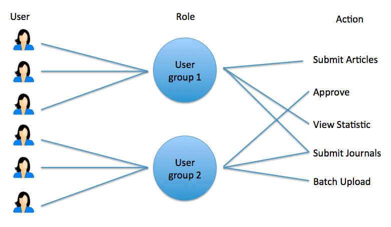
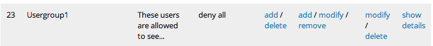
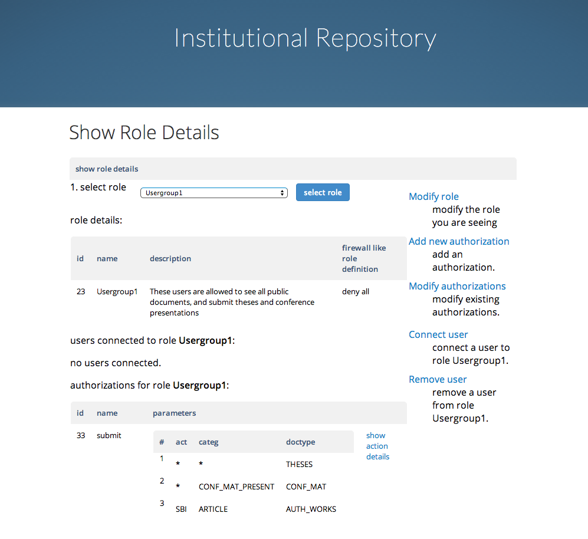
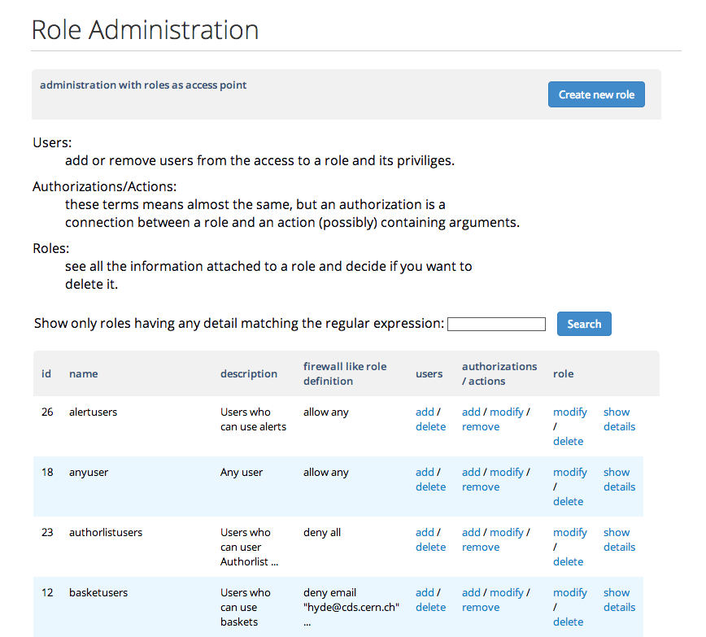

Manage user rights¶
1. Introduction¶
There are three important terms regarding user rights in Invenio:
- Users are the physical persons having access to Invenio.
- Actions identifies tasks a user can perform.
- Roles works as an intermediate between the users and actions, allowing several users to perform several actions.

All the parameters are set in the module WebAccess.

2. Connect roles to actions¶
First click on the “Role Area” on the front page of the WebAccess admin panel. A list of existing roles will now be displayed. Scroll down to the desired role and click “show details”. As an example, we will look at the role “Usergroup1”.

Here you can see information about the role, which users who are connected and which actions (also called authorizations) that are connected.

2.1 Overview of existing authorizations¶
As of existing authorizations, the users connected to this role are allowed to submit. By having a closer look at the action submit, we see that it has three parameters: “act”, “categ” and “doctype”. Such parameters helps the manager to set well defined authorizations. Different actions has different sets of parameters. A list of parameters are given in section five
In this example, the “doctype” is the first parameter to choose and should be equal to the code name of the submission workflow. Here the user are allowed to submit Theses, Conference Materials and Author Works.
Note
It is important that the name of the parameter is identical to how it is defined in Websubmit. Please check the documentation for your repository for correct names.
The second parameter, category ID, are used to distinguish subsets of a submission workflow. Example both Articles and Preprints belongs to the workflow AUTH_WOrKS, but the users linked to “Usergroup1” are only authorized to submit articles.
The third parameter, “act” defines if a person is allowed to submit (SBI), modify (MDI), or approve (APP).
Note
A star * means all and will allow for any arguments.
2.2 Link new actions to the role¶
To link new actions to the same role press “Add new authorization” in the upper right side. A new side will appear where you will see a roll-down menu with the different available action.

By choosing the desired action, you will be asked if it shall be authorized for any arguments or some specific arguments. If you would authorize for only some arguments, insert the related parameters. A star * authorize it for any arguments for the specific parameter.

3. Connect users to roles¶
There are two ways of connecting users to a role.
- Explicitly by adding single users directly.
- Implicitly by adding firewall-like role definitions.
3.1 Explicitly¶
First go to the detailed page of the desired role. To add single users directly, choose “Connect Users” on the upper right side. A new site will appear where you will be able to search for users and select them from the search results.

3.1 Implicitly¶
Roles could also have firewall-like role definitions. This means that the definition is built up by rows which are matched from top to bottom, in order to decide if the current user (wethever he/she is logged in or not) may belong to a role.
The syntax goes as follow:
- ALLOW/DENY ANY/ALL
- ALLOW/DENY FROM/UNTIL “YYYY-MM-DD”
- ALLOW/DENY [NOT] field {one or more values}
The rows are parsed from top to bottom. If a row matches the user than the user belongs to the role if the rule is an ALLOW rule, otherwise, if the rule is a DENY one, the user doesn’t belong to the role.
A rule of the kind ALLOW|DENY ANY always matches, regardless of the user.
Note, in place of ANY you can use the word ALL. The semantic is the same. The system support both to let the user comply with the English grammar.
- The default fields are:
- uid: an integer representing the user id
- nickname: the nickname of the user
- email: the email of the user
- group/groups: local or external group to which the user belong
- guest: 1 if the user is a guest (not logged), 0 otherwise
- remote_ip: the remote ip address of the user who is browsing
- remote_host: the remote hostname of the user who is browsing
- referer: the webpage from where the user is coming from
- uri: the uri the user is visiting
- agent: the agent string describing the user’s browser
To set a new definition, choose “modify role” on the upper right side. A new site will appear where you will be able to write your definitions. An example is given below:

This definition would match all users whose emails don’t end with @gmail.com and @hotmail.com, or who don’t belong to the group badguys and have remote_ip in the 24bit mask network of 127.0.0.0. All the the other users don’t belong to the role which is being defined.
The example above is reproduced below to easy copy/paste:
allow not email /.*@gmail.com/,/.*@hotmail.com/
deny group badguys
allow remote_ip "127.0.0.0/24"
deny all
4. Create new roles¶
To create a new role is an easy task and is mainly composed of adding actions (section two) and adding users (section three).
To create the new role, go to the overview of all roles and choose “Create new role”. You will then be guided step-by-step to define the necessary fields as described in section two and three.

Note
You can always edit the role, add/remove users and add/remove actions later by going into the detailed page of a role.
5. List of parameters¶
| Action | Parameter | Description |
|---|---|---|
| Submit | doctype | Is equal to the code name of the submission workflow. A more detailed description is found in Submit documents. |
| categ | The category (for eg. “Article”, “Preprint”) for which you wan to set the restriction | |
| act | The action (for eg. “SBI”) for which you want to set the restriction. | |
| Referee | doctype | Is equal to the code name of the submission workflow. A more detailed description is found in Submit documents. |
| categ | The category (eg. “Article”, “Preprint”) for which you wan to set the restriction | |
| viewrestrcoll | collection | Is the name of the collection which you would like to restrict. |
| viewrestrdoc | status | Is the restriction parameter given in marc field 856__r for restricted files. PS. cannot be seen in the metadata by a user. |
| runbibedit | collection | Is the name of the collection which you would like to give access to. |